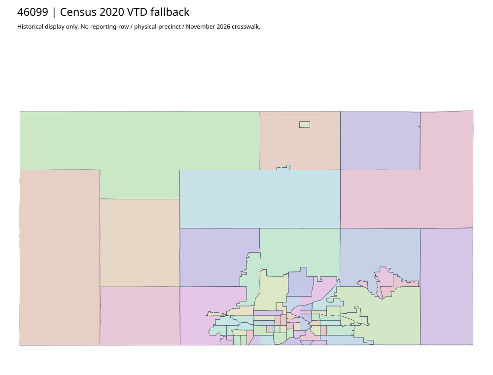

304 ordered indexMinnehaha | 46099
Official precinct parent raw403 is separate from primary web-reader href discovery. Two complete mapbooks acquired16/64 pages; actual inspected pages show3/12/2026. App/config/webmap yields81 complete native features with six true curves in custom US-survey-foot UTM14N WKT. No assumed EPSG, Mercator substitution, or row-to-polygon/current approval.
79 priority / 81 full historical observations. Parent is a summary ancestor, not additive to leaves. No physical feature matches or current reporting crosswalk approved.
Acquired shared-parent assets
minnehaha-county-PDF | complete16-page PDF; all-page contact sheet; complete page1; complete original gzip. Exact reconstruction: python -B scripts/reconstruct.py --id minnehaha-county-PDF /private/tmp/map.pdf
minnehaha-city-PDF | complete64-page PDF; all-page contact sheet; complete page1; complete original gzip. Exact reconstruction: python -B scripts/reconstruct.py --id minnehaha-city-PDF /private/tmp/map.pdf
native:minnehaha: 81 native features, 6 true curves. All attributes/schema/diagnostics. Linear display preview. Originals retain curves.
minnehaha-native-page01: complete original gzip
minnehaha-native-page02: complete original gzip
Census2020 fallback
75 native historical VTD features. Entire785-feature ZIP original retained once, all66 counties. Yankton has one countywide VTD. No current/reporting allocation. complete original gzip

Full binary/attribute/geometry QA
Observed authority/acquisition routes
Complete SOS authority fields including original blank/masked values: parent inventory. No contacts were sent.
Ordered full children
- Precinct-0417 | 2255 source votes | priority
- Precinct-0316 | 2197 source votes | priority
- Precinct-0319 | 2126 source votes | priority
- Precinct-VP15 | 2089 source votes | priority
- Precinct-VP05 | 2081 source votes | priority
- Precinct-VP07 | 2061 source votes | priority
- Precinct-VP21 | 2031 source votes | priority
- Precinct-VP03 | 1965 source votes | priority
- Precinct-0415 | 1945 source votes | priority
- Precinct-0217 | 1788 source votes | priority
- Precinct-0117 | 1760 source votes | priority
- Precinct-0416 | 1747 source votes | priority
- Precinct-0310 | 1742 source votes | priority
- Precinct-VP09 | 1629 source votes | priority
- Precinct-VP10 | 1616 source votes | priority
- Precinct-0202 | 1589 source votes | priority
- Precinct-0214 | 1535 source votes | priority
- Precinct-0309 | 1497 source votes | priority
- Precinct-0314 | 1488 source votes | priority
- Precinct-0412 | 1472 source votes | priority
- Precinct-VP02 | 1460 source votes | priority
- Precinct-0110 | 1436 source votes | priority
- Precinct-0512 | 1430 source votes | priority
- Precinct-0317 | 1390 source votes | priority
- Precinct-0106 | 1353 source votes | priority
- Precinct-0206 | 1328 source votes | priority
- Precinct-0315 | 1328 source votes | priority
- Precinct-0411 | 1315 source votes | priority
- Precinct-0109 | 1275 source votes | priority
- Precinct-0203 | 1275 source votes | priority
- Precinct-0218 | 1268 source votes | priority
- Precinct-0201 | 1238 source votes | priority
- Precinct-VP16 | 1231 source votes | priority
- Precinct-0518 | 1213 source votes | priority
- Precinct-0504 | 1202 source votes | priority
- Precinct-0418 | 1197 source votes | priority
- Precinct-0312 | 1172 source votes | priority
- Precinct-0519 | 1172 source votes | priority
- Precinct-0209 | 1171 source votes | priority
- Precinct-0506 | 1113 source votes | priority
- Precinct-0501 | 1102 source votes | priority
- Precinct-VP04 | 1099 source votes | priority
- Precinct-0419 | 1074 source votes | priority
- Precinct-0522 | 1070 source votes | priority
- Precinct-0311 | 1066 source votes | priority
- Precinct-0409 | 1045 source votes | priority
- Precinct-VP13 | 1032 source votes | priority
- Precinct-0520 | 1001 source votes | priority
- Precinct-0508 | 966 source votes | priority
- Precinct-VP08 | 939 source votes | priority
- Precinct-0404 | 897 source votes | priority
- Precinct-0313 | 888 source votes | priority
- Precinct-0301 | 885 source votes | priority
- Precinct-0521 | 877 source votes | priority
- Precinct-VP01 | 863 source votes | priority
- Precinct-0104 | 856 source votes | priority
- Precinct-0318 | 837 source votes | priority
- Precinct-0408 | 818 source votes | priority
- Precinct-0523 | 817 source votes | priority
- Precinct-0413 | 808 source votes | priority
- Precinct-0402 | 794 source votes | priority
- Precinct-0516 | 785 source votes | priority
- Precinct-0119 | 782 source votes | priority
- Precinct-VP17 | 754 source votes | priority
- Precinct-0305 | 725 source votes | priority
- Precinct-0407 | 720 source votes | priority
- Precinct-0405 | 693 source votes | priority
- Precinct-0406 | 685 source votes | priority
- Precinct-0510 | 639 source votes | priority
- Precinct-0208 | 625 source votes | priority
- Precinct-0507 | 625 source votes | priority
- Precinct-0502 | 600 source votes | priority
- Precinct-0105 | 596 source votes | priority
- Precinct-0320 | 538 source votes | priority
- Precinct-VP11 | 527 source votes | priority
- Precinct-0403 | 523 source votes | priority
- Precinct-0509 | 494 source votes | priority
- Precinct-0515 | 482 source votes | priority
- Precinct-VP06 | 458 source votes | priority
- Precinct-0410 | 432 source votes | remainder
- Precinct-0503 | 354 source votes | remainder